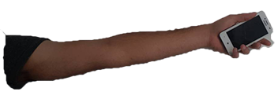
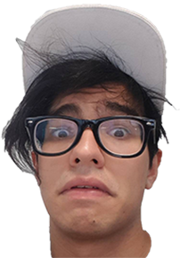
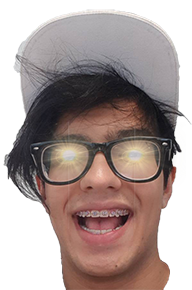
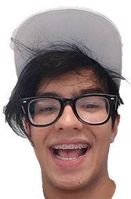

<canvas id='canvas'  style='border : 2px solid black;    cursor: none; background:url("background3.jpg")no-repeat center center; background-size:cover;'></canvas>





<audio autoplay loop>
    <source src="wifi.ogg" type="audio/ogg">
  </audio>
  


<script>
const ctx = canvas.getContext("2d");
canvas.width = 786;
canvas.height = 512;

// angle is the amount of rotation in radians
// ox,oy is the origin (center of rotation)
// x,y is the top left of the rectangle
// w,h is the width and height of the rectangle
// returns an array of points as arrays [[x,y],[x1,y1],...]
// Order of returned points topLeft, topRight, bottomRight, bottomLeft


function rotateRect(angle,ox,oy,x,y,w,h){
    const xAx = Math.cos(angle);  // x axis x
    const xAy = Math.sin(angle);  // x axis y
    x -= ox;  // move rectangle onto origin
    y -= oy; 
    return [[ // return array holding the resulting points
            x * xAx - y * xAy + ox,   // Get the top left rotated position
            x * xAy + y * xAx + oy,   // and move it back to the origin
        ], [
            (x + w) * xAx - y * xAy + ox,   // Get the top right rotated position
            (x + w) * xAy + y * xAx + oy,   
        ], [
            (x + w) * xAx - (y + h) * xAy + ox,   // Get the bottom right rotated position
            (x + w) * xAy + (y + h) * xAx + oy,   
        ], [
            x * xAx - (y + h) * xAy + ox,   // Get the bottom left rotated position
            x * xAy + (y + h) * xAx + oy,   
        ]
    ]; 
}


function drawRectangle(angle, ox, oy, rect, color ){
    ctx.strokeStyle = color;
    ctx.lineWidth = 1;
    ctx.setTransform(1,0,0,1,ox,oy);
    ctx.rotate(angle);
    //ctx.strokeRect(rect.x - ox, rect.y - oy, rect.w, rect.h);

    var img = document.getElementById("arm");
    ctx.drawImage(img, rect.x - ox, rect.y - oy, 250, 90);
  
    ctx.setTransform(1,0,0,1,0,0); // restore transform to default
}

function drawHappy(ox, oy){
    ctx.setTransform(1,0,0,1,ox,oy);
    var img = document.getElementById("happy");
    ctx.drawImage(img, ox ,oy);
    ctx.setTransform(1,0,0,1,0,0); // restore transform to default
}
function drawNeutro(ox, oy){
    ctx.setTransform(1,0,0,1,ox,oy);
    var img = document.getElementById("neutro");
    ctx.drawImage(img, ox ,oy);
    ctx.setTransform(1,0,0,1,0,0); // restore transform to default
}
function drawSad(ox, oy){
    ctx.setTransform(1,0,0,1,ox,oy);
    var img = document.getElementById("sad");
    ctx.drawImage(img, ox ,oy);
    ctx.setTransform(1,0,0,1,0,0); // restore transform to default
}
function drawBody(ox, oy){
    ctx.setTransform(1,0,0,1,ox,oy);
    var img = document.getElementById("body");
    ctx.drawImage(img, ox ,oy);
    ctx.setTransform(1,0,0,1,0,0); // restore transform to default
}


function drawBounds(rotatedRect){
    const r = rotatedRect; // alias to make following code more readable
    const left     = Math.min(r[0][0], r[1][0], r[2][0], r[3][0]);
    const right    = Math.max(r[0][0], r[1][0], r[2][0], r[3][0]);
    const top      = Math.min(r[0][1], r[1][1], r[2][1], r[3][1]);
    const bottom   = Math.max(r[0][1], r[1][1], r[2][1], r[3][1]);

   // ctx.strokeStyle = "#999";
    //ctx.lineWidth = 2;
   // ctx.strokeRect(left, top, right - left, bottom - top);
}

function drawDistance(text,x,y,dist,direction,textOverflowDir){
    if(dist.toFixed(2) == 0) { return }
    function drawArrows(){
        ctx.strokeStyle = "blue";
        ctx.lineWidth = 2;
        ctx.beginPath();
        ctx.lineTo(8,-12);
        ctx.lineTo(0,-7);
        ctx.lineTo(8,-2);
        ctx.moveTo(dist - 8, -12);
        ctx.lineTo(dist, -7);
        ctx.lineTo(dist - 8, -2);
        ctx.stroke();
    }
    
    
    ctx.setTransform(1,0,0,1,x,y);
    ctx.rotate(direction);
    const width = ctx.measureText(text).width;
    ctx.fillStyle = "blue";
    ctx.fillRect(-1, - 16, 2, 14);
    ctx.fillRect(dist -1,  - 16, 2, 14);
    if(width + 8 > dist){
        ctx.fillRect(1, -8, dist - 2, 2);
        drawArrows();
        ctx.fillStyle = "black";
        if(textOverflowDir < 0){
            ctx.fillText(text, - width / 2 - 4, - 9);
        }else{
            ctx.fillText(text,dist + width / 2 + 6, - 9);
        }
    }else{
        ctx.fillRect(-1,       - 8, (dist - width) / 2 - 4, 2);
        ctx.fillRect(dist - 1 - ((dist - width) / 2 - 4), - 8, (dist - width) / 2 - 4, 2);
        drawArrows();
        
        ctx.fillStyle = "black";
        ctx.fillText(text, dist / 2, - 9);
    }
    ctx.setTransform(1,0,0,1,0,0); //restore default transform
}
// set up the font
ctx.font = "16px arial";
ctx.textAlign = "center";
ctx.textBaseline = "middle";

var angle = 3.2;  // amount to rotate in radians
var ox = 256;   // origin top left of rectangle
var oy = 384; 
const rect = {
    x : 256,
    y : 384,
    w : 164,
    h : 82,
}


var currentX=-2;
var currentY=-2;
var angleRadians;

canvas.addEventListener('mousemove', function (e) {
    currentX = e.clientX - 250;
    currentY = e.clientY - 250;
    angleRadians = Math.atan2( currentY,currentX );
   
    if( angleRadians < -1.6 || (angleRadians <= 3.1416 && angleRadians >= 1.56)){
      angleRadians = -1.6;
    }
    if( angleRadians > -0.0 || (angleRadians <= 3.1416 && angleRadians >= 1.56)){
      angleRadians = -0.0;
    }

})

function getRandomArbitrary(min, max) {
  return -1*(Math.random() * (max - min) + min);
}

var rnd =  getRandomArbitrary(0.0 , 1.6 );
var signalCounter = 0;


//timer

var timer = null; 
var interval = 1000;
var timervalue = 0;

 function starttimer(){
  if (timer !== null) return;
  timer = setInterval(function () {timervalue = timervalue+1;}, interval); 
  }

function pausetimer(){
  clearInterval(timer);
  timer = null;
}


function resettimer(){
  var timer = null; 
var interval = 1000;
var timervalue = 0;

}


//countdown
var timeleft = 10;
var countDown = setInterval(function(){
  var countDownValue = 10 - --timeleft;
  if(timeleft <= 0)
  {
    
  alert("TE MORISTE");
    signalCounter = 0;
    timeleft = 10;
  }
  if(timeleft >= 30)
  {
    alert("GANASTE ");
    timeleft = 10;

  }
  },1000);


function mainLoop(){
    ctx.clearRect(0,0,600,786);
    angle = angleRadians ; // slowly rotate 
    // draw origin 
    //ctx.fillStyle = "#FA2";
    //ctx.fillRect(ox-1,0,2,600);
    //ctx.fillRect(0,oy-1,786,2);
    ctx.font = "30px Arial";
    ctx.fillText("Se acaba la pila en: " + timeleft ,440,70);
    ctx.fillText("Señal agarrada: " + signalCounter,405,120);


    //drawBody(50,190);
    drawSad(50,60);

    const rotatedRect = rotateRect(angle, ox, oy, rect.x, rect.y, rect.w, rect.h);
    drawBounds(rotatedRect);

    var rndg1 =  rnd+0.03;
    var rndg2 =  rnd-0.03;
    var rndy1 =  rnd+0.2;
    var rndy2 =  rnd-0.2;


    if( angleRadians < rndy1 && angleRadians > rndy2 ){
      if(angleRadians < rndg1 && angleRadians > rndg2){
      drawHappy(50,60);
      drawRectangle(angle, ox, oy, rect,'green');
      //start timer
      starttimer();
      if(  timervalue >= 3 ){
        if(  timervalue === 3 ){
        //ADD POINT
        drawRectangle(angle, ox, oy, rect,'blue');
        timeleft = timeleft+10;
        rnd =  getRandomArbitrary(0.0 , 1.6 );
        signalCounter++;
        }
      pausetimer();
      timervalue = 0;
    }


      }else{
        pausetimer();
        timervalue = 0;
        drawNeutro(50,60);
        drawRectangle(angle, ox, oy, rect,'yellow');
      }
    }else{
    drawRectangle(angle, ox, oy, rect,'red');
    }
    
    const r = rotatedRect; // alias to make following code more readable
    
    var leftOfOrigin  = Math.min(r[0][0],r[1][0],r[2][0],r[3][0]) - ox;
    var rightOfOrigin = Math.max(r[0][0],r[1][0],r[2][0],r[3][0]) - ox;
    var aboveOrigin   = Math.min(r[0][1],r[1][1],r[2][1],r[3][1]) - oy;
    var belowOrigin   = Math.max(r[0][1],r[1][1],r[2][1],r[3][1]) - oy;
    
    // draw distances
  /*
    drawDistance(leftOfOrigin.toFixed(2), ox + leftOfOrigin, oy +aboveOrigin, - leftOfOrigin, 0, -1);
    drawDistance(rightOfOrigin.toFixed(2), ox, oy + aboveOrigin, rightOfOrigin, 0, 1);
    drawDistance(belowOrigin.toFixed(2), ox + leftOfOrigin, oy + belowOrigin,  belowOrigin, - Math.PI / 2, -1);
    drawDistance(aboveOrigin.toFixed(2), ox + leftOfOrigin, oy, - aboveOrigin, - Math.PI / 2, 1);
*/
    requestAnimationFrame(mainLoop);
}

requestAnimationFrame(mainLoop);
</script>